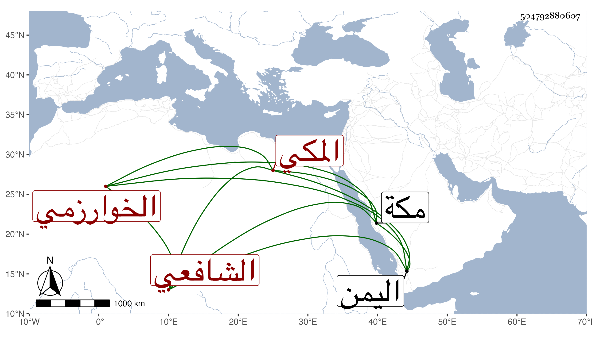

0902Sakhawi.DawLamic.ITO20230111-ara1.EIS1600.504792880607
Biography ID: 504792880607
أحمد بن حسين بن محمد بن عثمان الشهاب الخوارزمي المكي الشافعي . ممن حفظ القرآن والشاطبية والمنهاج والألفية وأخذ القراآت عن الزين بن عياش وهو الذي رثاه فجمع عليه للعشر والفقه عن القاضي أبي السعادات بن ظهيرة وعبد الرحمن ابن الجمال المصري والنحو عن الجلال المرشدي ولازمه بحيث كان أصل جماعته ، وتميز ودرس بالمسجد الحرام ودخل اليمن وصحب جماعة من الشاميين وارتفق برهم وكان ثقة خيرا ذكيا فاضلا . مات بمكة في يوم الأربعاء ثامن عشري ذي الحجة سنة خمس وأربعين . أرخه ابن فهد .
